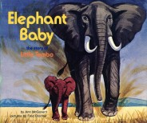
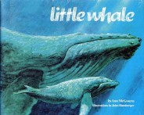
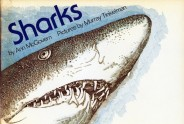
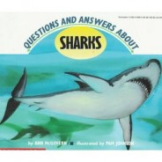
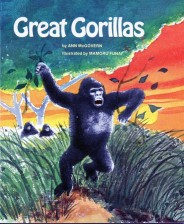

Animals

ELEPHANT BABY: The Story of Little Tembo
In Africa, Tembo lives with her family of nine elephants. Learn how she senses danger at an early age, how her herd finds food and water, why she does what other elephants do, and how she grows up to be an African elephant. Illustrated by John Rice. Ages 4-8.
‘It reads like a gripping story but knowing the author’s work, you can be sure all the information is accurate. McGovern combines story telling with nature writing in a distinctive voice.’ ALA Booklist

LITTLE WHALE
The true story of a humpback whale, from the day she is born, already weighing a ton, to a time she struggles to avoid whale-hunting ships. Young readers follow Little Whale through her first year of life in the deep, deep ocean. Ages 5-10.
“Clearly and succinctly presented in smooth narrative that young whale buffs will find fascinating and easy to read.” ALA Booklist
Earthworm Award for the book that “does the most to encourage environmental awareness and sensitivity in children.”

SHARKS
When Jaws first came out as a book, most scientists were dismayed at how sharks were depicted. Ann spent a year researching the truth about sharks, result: a best-selling book for kids. Illustrated by Murray Tinkelman. Ages 5-12
Awarded the best science book by the National Science Teachers Association and the Children’s Book Council.

QUESTIONS AND ANSWERS ABOUT SHARKS
Revised and up-to-date, this newer book about sharks has the latest information. Young readers will learn about deep-water sharks, such as the cookie-cutter shark, and some interesting facts that will surprise readers of all ages. Ages 5-12
“After the Jaws mania, SHARKS sold over a million copies. McGovern revised SHARKS and added new information that will give young readers a lot more respect for these animals.” Booklist

GREAT GORILLAS
An exciting true story of a day and a night in the life of a group of mountain gorillas in the wilds of an African forest. You'll laugh at the carefree games of the baby gorillas. You'll worry when the silverback male confronts a hunter. Ages 5-12.
“All about these fascinating animals on the verge of extinction. Children will be glued to the pages.” Book Bag